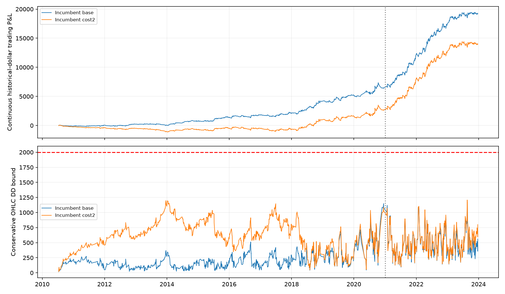

Same576 predeclared allocations; prefix TRAIN2010July-2020 selects one; continuous2010July-2023replay of only the frozen choice and incumbent. No cash/peak reset in2021. All periods are reused TRAIN. Validation/test/forward-paper outcomes excluded; no deployment.
Historical raw fills with micro economics; pre2019 uses E-mini proxy quotes, not actual micro liquidity. Conservative minute-OHLC bounds use pessimistic excursion ordering and include full uncertain exit bars; exact tick chronology and broker rules remain unverified. Payouts not modeled. Original normalized results cannot be compared as equivalent dollars.
First audit wrongly included a postexit interval for scheduled-open closes, flagging269quote gaps. Original failed run retained. All scheduled-open intervals were repaired using source-engine accounting before rescoring the identical grid; gap threshold and entry/exit/risk criteria unchanged.
| Policy | Period | Costs | Net | Cash_DD | OHLC_DD_bound | Trades | Inactivity_days | Qualified |
|---|---|---|---|---|---|---|---|---|
| REPRICED_INCUMBENT | prefix | base | 6,464.25 | 955.75 | 1,147.75 | 994.00 | 32.73 | True |
| REPRICED_INCUMBENT | prefix | cost2 | 2,673.25 | 1,159.25 | 1,196.75 | 994.00 | 32.73 | False |
| REPRICED_INCUMBENT | continuous_full | base | 19,169.25 | 955.75 | 1,157.75 | 1,334.00 | 32.91 | True |
| REPRICED_INCUMBENT | continuous_full | cost2 | 13,929.25 | 1,159.25 | 1,207.75 | 1,334.00 | 32.91 | False |

null
| name | cap | risk_cap | fraction | target | marked | qualified | net | cost2_net | bound | cost2_bound | worst_block | max_inactive_days | bad_path_exposures |
|---|---|---|---|---|---|---|---|---|---|---|---|---|---|
| T1600_C1_R150_F0.25_M0 | 1.00 | 150.00 | 0.25 | 1,600.00 | False | False | 6,703.25 | 2,820.25 | 899.50 | 1,196.75 | -296.07 | 42.96 | 0.00 |
| T1600_C1_R150_F0.25_M1 | 1.00 | 150.00 | 0.25 | 1,600.00 | True | False | 6,703.25 | 2,820.25 | 899.50 | 1,196.75 | -296.07 | 42.96 | 0.00 |
| T1600_C1_R150_F0.5_M0 | 1.00 | 150.00 | 0.50 | 1,600.00 | False | False | 6,703.25 | 2,820.25 | 899.50 | 1,196.75 | -296.07 | 42.96 | 0.00 |
| T1600_C1_R150_F0.5_M1 | 1.00 | 150.00 | 0.50 | 1,600.00 | True | False | 6,703.25 | 2,820.25 | 899.50 | 1,196.75 | -296.07 | 42.96 | 0.00 |
| T1600_C1_R150_F0.75_M0 | 1.00 | 150.00 | 0.75 | 1,600.00 | False | False | 6,703.25 | 2,820.25 | 899.50 | 1,196.75 | -296.07 | 42.96 | 0.00 |
| T1600_C1_R150_F0.75_M1 | 1.00 | 150.00 | 0.75 | 1,600.00 | True | False | 6,703.25 | 2,820.25 | 899.50 | 1,196.75 | -296.07 | 42.96 | 0.00 |
| T1600_C1_R150_F1_M0 | 1.00 | 150.00 | 1.00 | 1,600.00 | False | False | 6,703.25 | 2,820.25 | 899.50 | 1,196.75 | -296.07 | 42.96 | 0.00 |
| T1600_C1_R150_F1_M1 | 1.00 | 150.00 | 1.00 | 1,600.00 | True | False | 6,703.25 | 2,820.25 | 899.50 | 1,196.75 | -296.07 | 42.96 | 0.00 |
| T1750_C1_R150_F0.25_M0 | 1.00 | 150.00 | 0.25 | 1,750.00 | False | False | 6,703.25 | 2,820.25 | 899.50 | 1,196.75 | -296.07 | 42.96 | 0.00 |
| T1750_C1_R150_F0.25_M1 | 1.00 | 150.00 | 0.25 | 1,750.00 | True | False | 6,703.25 | 2,820.25 | 899.50 | 1,196.75 | -296.07 | 42.96 | 0.00 |
| T1750_C1_R150_F0.5_M0 | 1.00 | 150.00 | 0.50 | 1,750.00 | False | False | 6,703.25 | 2,820.25 | 899.50 | 1,196.75 | -296.07 | 42.96 | 0.00 |
| T1750_C1_R150_F0.5_M1 | 1.00 | 150.00 | 0.50 | 1,750.00 | True | False | 6,703.25 | 2,820.25 | 899.50 | 1,196.75 | -296.07 | 42.96 | 0.00 |
| T1750_C1_R150_F0.75_M0 | 1.00 | 150.00 | 0.75 | 1,750.00 | False | False | 6,703.25 | 2,820.25 | 899.50 | 1,196.75 | -296.07 | 42.96 | 0.00 |
| T1750_C1_R150_F0.75_M1 | 1.00 | 150.00 | 0.75 | 1,750.00 | True | False | 6,703.25 | 2,820.25 | 899.50 | 1,196.75 | -296.07 | 42.96 | 0.00 |
| T1750_C1_R150_F1_M0 | 1.00 | 150.00 | 1.00 | 1,750.00 | False | False | 6,703.25 | 2,820.25 | 899.50 | 1,196.75 | -296.07 | 42.96 | 0.00 |
| T1750_C1_R150_F1_M1 | 1.00 | 150.00 | 1.00 | 1,750.00 | True | False | 6,703.25 | 2,820.25 | 899.50 | 1,196.75 | -296.07 | 42.96 | 0.00 |
| T1850_C1_R150_F0.25_M0 | 1.00 | 150.00 | 0.25 | 1,850.00 | False | False | 6,703.25 | 2,820.25 | 899.50 | 1,196.75 | -296.07 | 42.96 | 0.00 |
| T1850_C1_R150_F0.25_M1 | 1.00 | 150.00 | 0.25 | 1,850.00 | True | False | 6,703.25 | 2,820.25 | 899.50 | 1,196.75 | -296.07 | 42.96 | 0.00 |
| T1850_C1_R150_F0.5_M0 | 1.00 | 150.00 | 0.50 | 1,850.00 | False | False | 6,703.25 | 2,820.25 | 899.50 | 1,196.75 | -296.07 | 42.96 | 0.00 |
| T1850_C1_R150_F0.5_M1 | 1.00 | 150.00 | 0.50 | 1,850.00 | True | False | 6,703.25 | 2,820.25 | 899.50 | 1,196.75 | -296.07 | 42.96 | 0.00 |
Frozen protocol and data repair · All577rows · TRAIN QA · Full results
No replacement: all576 alternatives failed at least one frozen prefix criterion. The repriced incumbent has positive whole-sample net and sub2000 conservative drawdown, but its extra-cost2010-2013block loses1036.25 and it fails annual stability. Do not conceal this by reporting only recent/aggregate profits. Extra-cost stress adds1dollar+1point percontract; it is conservative for target-limit fills and is not an exact doubling of every execution cost.
{
"passed": true,
"independent_prefix_reference_cases": 1154,
"independent_source_price_bound_checks": 24,
"nominal_alternatives": 576,
"distinct_prefix_execution_paths": 385,
"prefix_qualifiers": 0,
"rejection_counts": {
"cost2_positive_years": 576,
"cost2_nonpositive_block": 576,
"cost2_annual_activity": 384,
"cost2_inactivity": 384,
"base_drawdown": 26,
"base_positive_years": 39,
"base_nonpositive_block": 32,
"base_inactivity": 65,
"base_annual_activity": 56
},
"all_raw_prices_TRAIN_only": true,
"all_source_and_data_hashes_verified": true,
"all1789paths_valid": true,
"scheduled_open_intervals_repaired": 476,
"data_repair_preserved_all576configurations_and_limits": true,
"original_data_audit_retained": true,
"frozen_null_choice_respected": true,
"no_alternative_later_replay": true,
"prefix_matches_continuous_account_state": true,
"no_cash_peak_resets_or_loss_clipping": true,
"candidate_failure": "No candidate meets all early-training profitability/stability requirements after modeled costs; keep failure, no replacement.",
"caution": "OHLC bounds are conservative, not tick-order truth. Market-cost stress is an extra1dollar+1point percontract, not an exact doubling of limit-fill costs. Quantity-dependent impact/broker rules remain unverified. E-mini proxy quotes before2019 do not establish micro liquidity.",
"validation_accessed": false,
"test_accessed": false,
"paper_outcomes_accessed": false,
"independent_unseen_confirmation": false
}